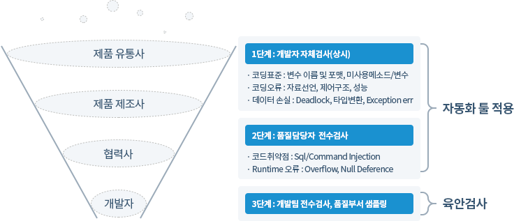

최근 지속적으로 사이버 공격이 증가하고 있는 추세이며 이러한 사이버 공격은 약 75%가 SW 자체의 보안취약점을 악용하는 것으로 웹사이트 공격이 대표적으로 발생하고 있습니다
최근에는 SQL삽입공격 등 SW에 내포된 보안 취약점을 이용하여 개인정보 등의 중요정보가 유출된 소니, 페이팔 등 사례가 있기도 합니다
"SW개발 보안"은 SW 개발 과정에서 개발자 실수, 논리적 오류 등으로 인해 SW에 내포될 수 있는 보안 취약점 원인,
즉 보안약점을 최소화하는 한편, 사이버 보안 위협에 대응할 수 있는 안전한 SW를 개발하기 위한 일련의 SW개발 보안 활동을 의미합니다.
광의적 의미로는 SW개발 생명주기(SDLC, SW Development Life Cycle)의 각 단계별로 요구되는 보안활동을 모두 포함하며, 협의적 의미로는
SW 개발 과정 중 소스코드 구현단계에서 보안약점을 배제하기 위한 '시큐어코딩(Secure Coding)'을 의미하고 있습니다.
본 가이드는 포스코ICT에서 진행하는 SW 개발 프로젝트에서 수행해야할 시큐어코딩 수행방안, 코드 보안 취약점 점검 항목을 가이드하고 있습니다.
제작 단계 품질향상을 위한 3단계의 Practice 활동을 중심으로 전개
- 1단계 : 개발자 중심의 실시간 결함 발견 및 수정
- 코딩 활동부터 표준위배사항을 점검하여 초기 결함을 최소화
- 2단계 : 품질 담당자에 의한 전수 검사
- 코드품질 개선 결과를 개발 진척도로 판단
- 코드품질 정량화(표준 준수율, 결함밀도 등)
- 3단계 : 육안검사
- 자동 점검이 안 되는 코드유형 및 아키텍쳐 구조, 모델링 구현 결과

※ 통과기준(개/Kloc 는 1,000라인당 결함수)
- 제작기간 내 코드 결함밀도 5 (개/Kloc) 이하
- Code Freezing 시 Critical 결함 0개, 코드 결함밀도 0 (개/Kloc) 기준
- 운영 중에도 Critical 결함 0개,코드 결함밀도 0 (개/Kloc) 유지->기준 미달 시 이행불가
| 개발팀 |
전체 모듈수 |
점검건수 |
점검비율 |
적합 |
보완필요
(Critical,
Major) |
양호
(Minor) |
표준 준수율 |
| ERP |
|
|
|
|
|
|
|
| SCM |
|
|
|
|
|
|
|
| MES |
|
|
|
|
|
|
|
- 적합 (단위테스트 착수가능 수준)
- ‘개발 표준 가이드’를 준수하여 단위테스트 착수가 바로 가능한 수준
(예 : 프로그램 설계서 및 ‘핵심프로그램 코드 인스펙션 결과서’의 모든 기능이 적합하게 구현되었고, 프로그램 작성 지침서의 형식 및 표준을 준수 함. )
- 보완 필요 (보완 완료 후 단위테스트 착수 가능한 수준)
- 업무처리에 필요한 기능을 모두 포함하고 있으나 ‘코드점검체크리스트’ 의 심각도 ‘Critical’, ‘Major’ 의 단위테스트에 영향을 미치는 오류가 발견된
경우
(예 : 예외처리 내용미비, 코딩오류, 자원 미해제, 런타임오류, 상수 Hard oding 등)
- 양호 (단위테스트수행하며 보완 내용 반영 가능 수준)
- 업무처리에 필요한 기능을 모두 포함하고 있으나, 프로그램 주석 미미, 표준오류 등 단위 테스트에 영향을 미치지 않는 프로그램 작성 오류가 발견된 경우
(예:‘코드점검체크리스트’ 의 점검항목 중 심각도 ‘Minor’ 프로그램 소스코드 주석오류, 디버깅 메세지,변수Naming, indentation 등)
코드 보안 취약점 점검 항목
(행안부, 2012) SW 개발보안가이드(43규칙),� (KISA, 2011) Java 시큐어 코딩가이드(83규칙), (KISA, 2011)
| 분류 |
취약점 명칭 |
CWE |
| 입력 데이터 검정 및 표현(14) |
SQL 삽입 |
89 |
| 자원 삽입 |
99 |
| 크로스 사이드 스크립트(XSS) |
80 |
| 운영체제 명령어 삽입 |
78 |
| 위험한 형식의 파일 업로드 |
434 |
| 신뢰되지 않는 URL 주소로 자동 접속 연결 |
601 |
| XQuery 삽입 |
652 |
| XPath 삽입 |
643 |
| LDAP 삽입 |
90 |
| 크로스사이트 요청 위조 |
352 |
| 디렉토리 경로 조작 |
22, 426 |
| HTTP 응답 분할 |
113 |
| 정수 오버플로우 |
190, 120 |
| 보허메커니즘을 우회 할 수 있는 입력값 변조 |
807 |
| 시간 및 상태(2) |
경쟁조건 : 검사시점과 사용시점(TOCTOU) |
367 |
| 제어문을 사용하지 않는 재귀함수 |
674 |
| 에러처리(3) |
오류 메세지 통한 정보 노출 |
209 |
| 오류 상황 대응 부재 |
390 |
| 적절하지 않은 예외처리 |
754 |
| 코드 오류(2) |
널(Null) 포인터 역참조 |
476 |
| 부적절한 자원 해제 |
404 |
| 보안 특성(16) |
적절한 인증없는 중요기능 허용 |
306 |
| 부적절한 인가 |
285 |
| 중요한 자원에 대한 잘못된 권한 허용 |
732 |
| 취약한 암호화 알고리즘의 사용 |
327 |
| 사용자 중요정보 평문 저장(또는 전송) |
311 |
| 하드코드된 패스워드 |
259 |
| 충분하지 않은 키 길이 사용 |
310 |
| 적절하지 않은 난수 값의 사용 |
330 |
| 패스워드 평문 저장 |
256 |
| 하드코드된 암호화키 |
321 |
| 취약한 패스워드 허용 |
521 |
| 사용자 하드디스크에 저장되는 쿠키응 통한 정보노출 |
539 |
| 보안속성 미적용으로 인한 쿠키노출 |
614 |
| 주석문안에 포함된 패스워드 등 시스템 주요정보 |
615 |
| 솔트 없이 일방향 해쉬 함수 사용 |
759 |
| 무결성 검사없는 코드 다운로드 |
494 |
| 캡슐화(5) |
잘못된 세션에 의한 데이터 정보노출 |
488 |
| 제거되지 않고 남은 디버거 코드 |
489 |
| 시스템 데이터 정보 노출 |
497 |
| Public 메소드부터 반환된 Private 배열 |
495, 766 |
| Private 배열 public 데이터 할당 |
496, 766 |
| API 악용(1) |
DNS lookup에 의존한 보안결정 |
247 |
XSS(Cross Site Scripting)
취약점 이름
XSS(Cross Site Scripting)
취약점 정의
외부에서 입력되는 검증되지 않은 입력이 동적 웹페이지의 생성에 사용될 경우, 전송된 동적 웹페이지를 열람하는 접속자의 권한으로 부적절한 스크립트가 수행되어
정보 유출 등의 피해가 발생함.
안전한 코딩
외부에서 입력한 문자열을 사용하여 결과 페이지를 생성할 경우, replaceAll() 등과 같은 메소드를 사용하여 위험한 문자열을 제거
| 안전하지 않은 코드 예 |
안전한 코드 예 |
<!—외부로부터 이름을 받음-->
String name = request.getParameter("name");
<p>NAME:<%=name%>
|
<!—외부로부터 이름을 받음-->
String name = request.getParameter("name");
<!—외부의 입력값에 대한 검증을 한다. -->
if ( name != null ) {
name = name.replaceAll("<","<");
name = name.replaceAll(">",">");
name = name.replaceAll(“&”,”&”);
name = name.replaceAll(“”””,”"”);
} else {
return;
}
%>
<!—외부로부터 받은 name에서 ‘위험 문자’를 제거한 후 출력-->
<p>NAME:<%=name%></p>
|
SQL Injection
취약점 이름
SQL Injection
취약점 정의
공격자가 외부 입력을 통해서 SQL 명령어를 수행할 수 있다. 즉 외부 입력한 데이터에 대한 유효성을 점검하지 않아 쿼리 로직이 변경되어 공격자의 의도대로 타인의 정보 유출
또는
DB 의
변경이 발생
안전한 코딩
- 쿼리에 사용되는 문자열에 대해 유효성 검사 수행
- Static SQL 사용을 위해 JAVA의 Statement 대신 PreparedStatement Object 사용을 권장
- 시스템에서 제공하는 에러메세지 및 DBMS에서 제공하는 에러코드가 노출되지 않도록 예외처리
| 안전하지 않은 코드 예 |
안전한 코드 예 |
String sql = "SELECT * FROM user_table" + " WHERE id = " + response.getParameter ("id")
+ " AND password
= " + response.getParameter("password");
Class.forName("org.gjt.mm.mysql.Driver");
conn = DriverManager.getConnection(DB_URL, DB_USER, DB_PASSWORD);
stmt = conn.createStatement();
rs = stmt.executeQuery(query);
while(rs.next())
|
String sql = "SELECT * FROM user_table" + " WHERE id = ?" + " AND password = ?";
ResultSet rs = null;
PreparedStatement pstmt = null;
try
conn = DBManager.getConnection();
pstmt = conn.prepareStatement(sql);
pstmt.setString(1, request.getParameter("id"));
pstmt.setString(2, request.getParameter("password"));
rs = pstmt.executeQuery();
|
SQL Injection
HTTP Response Splitting(HTTP 응답 분할)
취약점 이름
HTTP Response Splitting(HTTP 응답 분할)
취약점 정의
HTTP 요청에 들어 있는 인자값이 HTTP 응답헤더에 포함되어 사용자에게 다시 전달되는 경우 입력값에 CR(Carriage Return)이나 LF(Line Feed)와 같은
개행문자가 존재하면 HTTP 응답이 2개 이상으로 분리될 수 있다. 이 경우 공격자는 개행문자를 이용하여 첫 번째 응답을 종료시키고
두 번째 응답에 악의적인 코드를 주입 할 수 있게 되어 공격자는 두 번째 응답을 이용해서 XSS 및 캐시 훼손(cache poisoning)공격과 같은 것을
시도할 수 있다.
안전한 코딩
외부에서 입력된 인자값을 사용하여 HTTP 응답헤더(Set Cookie 등)에 포함시킬 경우 CR, LF등이 제거하거나 적절한 인코딩 기법을 사용하여 변환한다.
| 안전하지 않은 코드 예 |
안전한 코드 예 |
// 사용자 정보를 읽어온다.
String author = request.getParameter("authorName");
if (author == null || "".equals(author)) return;
Cookie cookie = new Cookie("replidedAuthor", author);
cookie.setMaxAge(1000);
cookie.setSecure(true);
|
// 사용자 정보를 읽어온다.
String author = request.getParameter("authorName");
if (author == null || "".equals(author)) return;
// 헤더값이 두개로 나뉘어지는 것을 방지하기 위해 외부에서 입력되는 \n과 \r등을 제거한다.
String filtered_author = author.replaceAll("\r", "").replaceAll("\n", "");
Cookie cookie = new Cookie("replidedAuthor", filtered_author);
cookie.setMaxAge(1000);
cookie.setSecure(true);
|
과도한 에러메세지 노출
취약점 이름
Struts Validator Config (과도한 에러메세지 노출)
취약점 정의
SW는 오류 메시지를 통해 환경, 사용자, 관련 데이터 등의 프로그램 내부 정보가 유출될 수 있다.예를 들어 예외 발생 시 예외 이름이나 스택 트레이스를 출력하면 프로그램
내부
구조를
쉽게 파악할 수 있음.
안전한 코딩
최종 사용자에게 배포되는 SW에서는 내부 구조나 공격자에 활용될 수 있는 민감한 정보를 사용자에게 보여지지 않도록 디버그 용도로 사용되는 에러 출력은 개발후 삭제하여 운영해야
함.
(* 부득이한 경우 에러 메시지 출력시 콘솔에만 보여지도록 처리해야 함.)
| 안전하지 않은 코드 예 |
안전한 코드 예 |
public static void main(String[] args) {
String urlString = args[0];
try{
URL url = new URL(urlString);
URLConnection cmx = url.openConnection();
cmx.connect();
}
catch (Exception e) {
e.printStackTrace();
}
}
|
public static void main(String[] args) {
String urlString = args[0];
try{
URL url = new URL(urlString);
URLConnection cmx = url.openConnection();
cmx.connect();
}
catch (Exception e) {
System.out.println("연결 예외 발생");
}
}
|
취약점 예외 여부시 확인 사항
상기 과도한 에러메세지 노출 취약점에 대해서는 대 다수의 개발시 사용하고 있으며 에러나 장애 발생시 빠른 장애처리를 위해 일부러 해당 메시지를 삽입하여 개발하고 있음.
이로 인하여 수정하여야 할 물량이 많을 뿐만 아니라 단순한 에러나 장애 관련 메시지를 출력하는 부분에 대해서는 취약하지 않다고 예외 처리함.
단, 임의의 사용자에 의해 입력값(폼입력값, 파라미터값 등)을 받아서 에러 메시지를 프린트 처리하는 경우 또는 스택 트레이스(e.printStackTrace();) 를
출력하면
프로그램
내부 정보가 유출되는 등 취약할 가능성이 크므로 이 예외 부분에서 제외키로함.
상대 디렉토리 경로 조작
취약점 이름
상대 디렉토리 경로 조작
취약점 정의
외부의 입력을 통하여 디렉토리 경로 문자열 생성이 필요한 경우, 외부 입력값에 대해 경로 조작에 사용될 수 있는 문자를 필터링하지 않으면, 예상 밖의 접근 제한 영역에 대한
경로
문자열
구성이 가능해져 시스템 정보노출, 서비스 장애 등을 유발 시킬 수 있다.
안전한 코딩
외부의 입력이 직접 파일이름을 생성하는대 사용될 수 없도록 한다. 불가피하게 직접 사용하는 경우, 다른 디렉토리의 파일을 접근할 수 없도록 replaceAll() 등의
메소드를
사용하여
위험 문자열(“,/,\)을 제거하는 필터를 거치도록한다.
| 안전하지 않은 코드 예 |
안전한 코드 예 |
……
public void accessFile(Properties request)
{
……
String name = request.getProperty("filename");
if( name != null )
{
File file = new File("/usr/local/tmp/" + name);
file.delete();
}
……
}
|
public void accessFile(Properties request)
{
……
String name = request.getProperty("user");
if ( name != null && !"".equals(name) )
{
name = name.replaceAll("/", "");
name = name.replaceAll("\\", "");
name = name.replaceAll(".", "");
name = name.replaceAll("&", "");
name = name + "-report";
File file = new File("/usr/local/tmp/" + name);
if (file != null) file.delete();
}
|
절대 디렉토리 경로 조작
취약점 이름
절대 디렉토리 경로 조작
취약점 정의
외부 입력이 파일 시스템을 조작하는 경로를 직접 제어할 수 있거나 영향을 끼치면 위험하다. 사용자 입력이 파일 시스템 작업에 사용되는 경로를 제어하는 것을 허용하면, 공격자가
응용프로그램에 치명적인 시스템 파일 또는 일반 파일을 접근하거나 변경할 가능성이 존재한다.
안전한 코딩
외부의 입력을 통해 파일이름의 생성 및 접근을 허용하지 말고, 외부 입력에 따라 접근이 허용된 파일의 리스트에서 선택하도록 프로그램을 작성하는 것이 바람직하다.
| 안전하지 않은 코드 예 |
안전한 코드 예 |
private final String APPLY_STYPLE_COMMAND = "apply_style";
private final String USER_ID_PARAM = "user_id";
private final String STYLE_FILE_NAME_PARAM = "styple_file_name";
private final int BUFFER_SIZE = 256;
...
protected void doPost(HttpServletRequest request, HttpServletResponse response)
throws
ServletException, IOException
{
String command = request.getParameter("command");
if (command.equals(APPLY_STYPLE_COMMAND))
{
String userId = request.getParameter(USER_ID_PARAM);
String styleFileName = request.getParameter(STYLE_FILE_NAME_PARAM);
String userHomePath = getUserHomeDir(userId);
byte [] buffer = new byte [BUFFER_SIZE];
FileInputStream inputStream = new FileInputStream(userHomePath + style-
FileName);
inputStream.read(buffer);
...
|
public DocumentService()
{
styleFileNames = new Hashtable
<String
, String>();
styleFileNames.put("Normal", "NormalStyle.cfg");
styleFileNames.put("Classic", "ClassicStyle_1.cfg");
styleFileNames.put("Gothic", "ClassicStyle_2.cfg");
...
}
protected void doPost(HttpServletRequest request, HttpServletResponse response)
throws
ServletException, IOException
{
String command = request.getParameter("command");
...
if (command.equals(APPLY_STYPLE_COMMAND))
{
String userId = request.getParameter(USER_ID_PARAM);
String styleName = request.getParameter(STYLE_NAME_PARAM);
String userHomePath = getUserHomeDir(userId);
String styleFilePath = userHomePath + styleFileNames.get(styleName);
byte [] buffer = new byte [BUFFER_SIZE];
FileInputStream inputStream = new FileInputStream(styleFilePath );
inputStream.read(buffer);
|
주요 발생 결함
| 점검 규칙명 |
Out of Bound Array Indexing |
설명 |
배열 접근시 첨자(index)는 유효한 범위내에서 사용해야 한다. |
| 심각도 |
Critical |
영향도 |
유효하지 않은 범위의 배열 접근시 run time error 발생한다. |
| 수정전 |
수정후 |
void�C4005as2c6::qtyChangeCB(IlvGraphic* g)�{� RWCString array[2] = {"12","21"};� if(
mvQtyOrdering.isNull() )� mvQtyOrdering = array[0];� int i;� for(i=0;i<2;i++)� {� if(
mvQtyOrdering == array[i] )� {� if( i == 1 )� i = 0;� else� i++;� break;� }� }�
mvQtyOrdering = array[i];� setLabelQtyOrdering(mvQtyOrdering);�}�->array[i];에서 i값이 2일 경우
배열첨자 유효크기인 1보다커서 run time error가 발생한다.
|
void
C4005as2c6::qtyChangeCB(IlvGraphic* g)
{
RWCString array[2] = {"12","21"};
if(
mvQtyOrdering.isNull() )
mvQtyOrdering = array[0];
int i;
for(i=0;i<2;i++)
{
if( mvQtyOrdering == array[i] )
{
if( i == 1 )
i =0;
else
i++;
break;
}
}
if( i < 2)
mvQtyOrdering = array[i];
setLabelQtyOrdering(mvQtyOrdering);
}
|
| 점검 규칙명 |
Divide by Zero |
설명 |
나눗셈 연산시 0 으로 나누지 않아야 한다. |
| 심각도 |
Critical |
영향도 |
0으로 나누는 경우 run-time error발생 |
| 수정전 |
수정후 |
int
CSMaterialSizeEdit::editDivisionNoK(int aSdWeight,
int
aProdStdPackTolMin,
int aProdStdPackTolMax,
float
aYieldRate,
IAString aOrdPdtItdsCd)
{
int tDivisionNo = 1;
if(
CSDataUtil::isSheet(aOrdPdtItdsCd)
)//sheet재
{
return tDivisionNo;
}
int tSdWeight = (int)(aSdWeight *
aYieldRate);
if(aProdStdPackTolMax == 0)
tDivisionNo = 0;
else
tDivisionNo =
(int)(tSdWeight /
((float)aProdStdPackTolMax));
if ((tSdWeight % aProdStdPackTolMax) != 0)
tDivisionNo
++;
......
-> aProdStdPackTolMax이 0일 경우 에러발생
|
int
CSMaterialSizeEdit::editDivisionNoK(int aSdWeight,
int aProdStdPackTolMin,
int
aProdStdPackTolMax,
float aYieldRate,
IAString aOrdPdtItdsCd)
{
int tDivisionNo = 1;
if(
CSDataUtil::isSheet(aOrdPdtItdsCd) ) //sheet재
{
return tDivisionNo;
}
int
tSdWeight =
(int)(aSdWeight * aYieldRate);
if(aProdStdPackTolMax == 0)
tDivisionNo = 0;
else
tDivisionNo = (int)(tSdWeight / ((float)aProdStdPackTolMax));
if (
aProdStdPackTolMax &&
(tSdWeight
% aProdStdPackTolMax) != 0)
tDivisionNo ++;
......
-> aProdStdPackTolMax 값이 0이 아닌
경우조건을 만족하면 나눗셈을 한다.
|
| 점검 규칙명 |
Releasing a JDBC resource |
설명 |
JDBC에 대한 할당 자원(Statement, ResultSet)은 반드시 해제 되는 것을 보장해야 한다. 할당 자원에 대해 해제가 존재하지 않는 경우만
점검한다.
반드시
finally구문에서 해제해야 한다.
|
| 심각도 |
Critical |
영향도 |
자원 하나당 try catch로 감싸서 자원해지하여 예외처리가 안되는 경우를 방지한다. |
| 수정전 |
수정후 |
..............
}
catch (Exception ex)
{
throw new
Exception(ex);
}
finally
{
if (rs != null)
rs.close();
if (pstmt != null) pstmt.close();
}
..........
|
..............
}
catch (Exception ex)
{
throw new
Exception(ex);
}
finally
{
if (rs != null)
try
{
rs.close(); } catch (Exception e) {}
if (pstmt != null)
try {
pstmt.close(); }
catch (Exception e) {}
}
..........
|
| 점검 규칙명 |
Misplaced Null String Comparison |
설명 |
잘못된 위치를 가지는 Null 비교 수식은 사용하지 않아야 한다. |
| 심각도 |
Critical |
영향도 |
null 비교 순서가 다를 시 Null pointer exception이 발생할 수 있다. |
| 수정전 |
수정후 |
if (orderVo.hasNext() && orderVo != null)
{
Row orderRow = orderVo.next();
map.put(K_ORDER_HEAD_LINE_NO, orderRow.getAttribute(D_ORDER_HEAD_LINE_NO));
map.put(K_ORD_PDT_ITDS_CD_N, orderRow.getAttribute(D_ORD_PDT_ITDS_CD_N));
map.put(K_POSB_PASS_FAC_CD_N, orderRow.getAttribute(D_POSB_PASS_FAC_CD_N));
map.put(K_CFIRM_PASS_OP_CD, orderRow.getAttribute(D_CFIRM_PASS_OP_CD));
...........
->
orderVo가
Null일 경우
orderVo.hasNext()에서 null pointer exception이 발생한다.
|
if (orderVo != null && orderVo.hasNext())
{
Row orderRow = orderVo.next();
map.put(K_ORDER_HEAD_LINE_NO, orderRow.getAttribute(D_ORDER_HEAD_LINE_NO));
map.put(K_ORD_PDT_ITDS_CD_N, orderRow.getAttribute(D_ORD_PDT_ITDS_CD_N));
map.put(K_POSB_PASS_FAC_CD_N, orderRow.getAttribute(D_POSB_PASS_FAC_CD_N));
map.put(K_CFIRM_PASS_OP_CD, orderRow.getAttribute(D_CFIRM_PASS_OP_CD));
...........
->
orderVo가
null이
아닌경우를 먼저 비교하고 그 다음
orderVo.hasNext()를 호출 한다.
|
| 점검 규칙명 |
Floating Point Values |
설명 |
부동소수점(Floating-point) 비교 연산 시 ==(Equality Expression) 연산을 금지한다. |
| 심각도 |
Major |
영향도 |
부동소수점(float 또는 double) 비교는 자리수의 제한 때문에 오차가 생기므로 부등호 연산으로 비교하면 안되고 라이브러리함수를 사용해야한다. |
| 수정전 |
수정후 |
if ( Float.parseFloat(PosPrgsCommonUtil.rowGetAttr( X_DELH010_REC, "PrdWth", "0")) !=
120 &&
Float.parseFloat(PosPrgsCommonUtil.rowGetAttr( X_DELH010_REC, "PrdWth", "0")) != 160 )
{ //제품 폭
X_ERR_COLUMN_NAME = "PRD_WTH";
X_ERR_COLUMN_VALUE = PosPrgsCommonUtil.rowGetAttr( X_DELH010_REC, "PrdWth", "0");
X_ERROR_P_CNT = X_ERROR_P_CNT + 1;
}
|
if ( Float.compare( Float.parseFloat(PosPrgsCommonUtil.rowGetAttr( X_DELH010_REC,
"PrdWth",
"0")) ,
120)
&& Float.compare( Float.parseFloat(PosPrgsCommonUtil.rowGetAttr( X_DELH010_REC,
"PrdWth",
"0")) ,
160) )
{ //제품 폭
X_ERR_COLUMN_NAME = "PRD_WTH";
X_ERR_COLUMN_VALUE = PosPrgsCommonUtil.rowGetAttr( X_DELH010_REC, "PrdWth", "0");
X_ERROR_P_CNT = X_ERROR_P_CNT + 1;
}
|
| 점검 규칙명 |
Non Final Field Accessing without Synchronization |
설명 |
쓰레드를 상속받은 객체의 필드 접근시 반드시 메소드 동기화나 동기화 문장내에서 접근해야 한다. |
| 심각도 |
Major |
영향도 |
쓰레드가 자원을 동시에 접근하는 것을 방지하기위해 lock을 걸어준다. |
| 수정전 |
수정후 |
class C400630086 extends Thread
{
PosBC4JServiceImpl bli;
......
public
void
run() {
CallableStatement callStmt = null;
String
OutErrbuf = null;
String OutRetcode = null;
String Msg = null;
int
OutReturnValue = 0;
try {
callStmt =
bli.getDBTransaction().createCallableStatement("{call C400630086(:1 ,:2 ,:3)}",
0);
......
|
class C400630086 extends Thread
{
PosBC4JServiceImpl bli;
......
public
synchronized
void run()
{
CallableStatement callStmt = null;
String
OutErrbuf = null;
String OutRetcode = null;
String Msg = null;
int
OutReturnValue = 0;
try {
callStmt =
bli.getDBTransaction().createCallableStatement("{call C400630086(:1 ,:2 ,:3)}",
0);
......
|
| 점검 규칙명 |
Null Dereference |
설명 |
객체에 null이 배정된 이후 객체에 대한 참조를 하지 말아야 한다. |
| 심각도 |
critical |
영향도 |
많은 개발자들이 객체의 멤버 변수나 함수를 사용할 때 객체가 NULL인 경우는 생각하지 않고 사용한다.
반드시 객체가 NULL이 아닌경우에만 참조를 해야한다. (NULL Pointer exception발생).
|
| 수정전 |
수정후 |
public int execute() {
iGetResultCode = 0;
HttpClient client = null;
HttpMethod method = null;
NameValuePair[] paramArray = new NameValuePair[paramList.size()];
paramList.toArray(paramArray);
try {
client = new HttpClient(new MultiThreadedHttpConnectionManager());
client.setTimeout(getConnectionMaxTime());
|
public int execute() {
iGetResultCode = 0;
HttpClient client = null;
HttpMethod method = null;
NameValuePair[] paramArray = new NameValuePair[paramList.size()];
paramList.toArray(paramArray);
try {
client = new HttpClient(new MultiThreadedHttpConnectionManager());
if(client != null)// Null이 아닌 경우에만 참조하기위해 조건식 넣어줌
client.setTimeout(getConnectionMaxTime());
|
| 점검 규칙명 |
Private Array-Typed Field Returned From A Public Method |
설명 |
private Array 자료형을 갖는 field 들은 public 메소드에서 절대로 반환해서는 안된다. |
| 심각도 |
critical |
영향도 |
Private배열을 public 메소드가 반환하면, 배열 주소값이 외부로 공개됨으로써 외부에서 배열 수정이 가능해진다. |
| 수정전 |
수정후 |
public class DefaultEntityBean
{
private String[] stringValue;
public String[] getString()
{
return stringValue; /* Violation */
}
}
|
public class DefaultEntityBean
{
private String[] stringValue;
public String[] getString()
{
String[] str=new String[stringValue.length];
System.arraycopy(stringValue,0,str,0,stringValue.length);
return str;
}
}
|
| 점검 규칙명 |
Public Data Assigned to Private Array-Typed Field |
설명 |
private Array 자료형을 갖는 field 들은 절대로 public 메소드에서 바로 배정해서는 안된다. |
| 심각도 |
critical |
영향도 |
Public으로 선언된 데이터 또는 메소드의 파라미터를 private배열에 저장하면, private배열을 외부에서 접근할 수 있다. |
| 수정전 |
수정후 |
public class DefaultEntityBean
{
private String[] str;
public void setStr(String[] args)
{
this.str = args; /* Violation */
}
}
|
public class DefaultEntityBean
{
private String[] str;
public void setStr(String[] args)
{
this.str = new String[args.length];
System.arraycopy(args, 0, this.str, 0, args.length);
}
}
|
| 점검 규칙명 |
Use of Insufficiently Random Values |
설명 |
Math.random()과 Random.setSeed() 메소드 호출은 사용해서는 안된다. |
| 심각도 |
critical |
영향도 |
Math.random()은 난수가 일정 패턴이 있어 난수값을 예측할 수 있다. |
| 수정전 |
수정후 |
public void bad() throws Throwable
{
Random rand = new Random();
/* Violation: seed is static, making the numbers always occur in the same sequence
*/
rand.setSeed(123456);
IO.writeLine("Random int: " + rand.nextInt(100));
}
|
private void good1() throws Throwable
{
/* FIX: use SecureRandom to be cryptographically secure */
SecureRandom rand = new SecureRandom();
IO.writeLine("Random int: " + rand.nextInt(100));
}
public int roledice()
{
Random r = new Random();
r.setSeed(new Date().getTime());
return (r.nextInt()%6) + 1;
}
|
국정원 8대 취약점
- 디렉토리 리스팅 취약점 : �홈페이지의 속성을 설정하는 “웹사이트 등록정보”에 특정 디렉토리에 대하여 �
- IIS 웹 서버 : ‘디렉토리 검색’ 항목이 체크�
- Apache 웹 서버 : ‘httpd.conf 파일’에서 ‘Indexes’옵션이 On�되어 있는 경우에 인터넷 사용자에게 모든 디렉토리 및 파일
목록이
보여지게 되고, 파일의 열람 및 저장도 가능하게 되어 비공개 자료가 유출될 수 있다.
- 파일 다운로드 취약점 - OWASP와 중복�
- 게시판 등에 저장된 자료에 대해 ‘다운로드 스크립트’를 이용하여 다운로드 기능을 제공하면서,
대상 자료파일의 위치 지정에 제한조건을 부여하지 않았을 경우에 URL칸의 다운로드 스크립트의인수 값에 ‘../’문자열 등을 입력하여 시스템
디렉토리 등에 있는 /etc/passwd와 같은 비공개 자료들이 유출될 수 있다. (특히, 리눅스 및 유닉스 계열의 웹 서버에 각별한 주의가 필요)
- 크로스사이트 스크립트 취약점 - OWASP와 중복�
- 게시판에 새 게시물을 작성하여 등록할 때와 같이 사용자의 입력을 받아 처리하는 웹 응용프로그램에서 입력 내용에 대해 실행코드인
스크립트의 태그를 적절히 필터링하지 않을 경우에 악의적인 스크립트가 포함된 게시물을 등록할 수 있어 해당 게시물을 열람하는 일반 사용자의 pc로 부터
개인정보인 쿠키를 유출할 수 있는 등의 피해를 초래할 수 있다.
- 파일 업로드 취약점 - OWASP와 중복�
- 첨부파일 업로드를 허용하는 홈페이지 게시판에서 .php, .jsp등의 확장자 이름의 스크립트 파일의 업로드를 허용할 경우에 해커가 악성 실행
프로그램을 업로드한 후에 홈페이지 접속방식으로 원격에서 서버컴퓨터의 시스템 운영 명령어를 실행 시킬 수 있다.
- WebDAV 취약점 - 원격 실행�
- 윈도우 서버 컴퓨터에서 기본으로 설치되는 원격관리기능인 WebDAV가 계속 사용 가능하도록 설정되어 있고, WebDAV 라이브러리 파일의 속성
및 홈페이지 디렉토리에 쓰기 권한이 모두 허용되어 있는 경우에 해커가 WevDAV도구를 사용, 원격에서 홈페이지 디렉토리에 임으로 파일을 삽입하여
화면을
변조할 수 있다.�
- 테크노트(Technote) 취약점-국내 개발, 무료 배포 게시판 제작 프로그램�
‘테크노트’의 일부 CGI프로그램들에서 인수 값 처리시에 ‘ㅣ’문자 이후에 나오는 컴퓨터 운영 명령어가 실행될 수 있는 결함이 있어 해커는
홈페이지접속 방식으로 컴퓨터 명령어를 실행하여 화면을 변조하거나 컴퓨터를 조작할 수 있다.�
- Linux 및 Unix계열의 컴퓨터에 주로 사용�
- Windows 계열에서 ‘Perl’이 지원될 경우 사용
- 제로보드(Zeroboard) 취약점 - 국내 개발, 무료 배포 게시판 제작 프로그램�
‘제로보드’의 일부 php프로그램이 원격에 있는 php파일을 실행할 수 있는 결함이 있어 해커는 홈페이지 접속 방식으로 컴퓨터 명령어를 실행하여 화면을
변조하거나
컴퓨터를 조작할 수 있다.�
- Linux 및 Unix 계열의 컴퓨터에 주로 사용�
- Windows 계열에서 ‘php’가 지원될 경우 사용
- SQL Injection 취약점
- OWASP와 중복�웹 브라우저 주소 창 또는 사용자 ID 및 패스워드 입력화면에서 데이터베이스 SQL문에 사용되는문자기호(‘ 및”)의
입력을 적절히 필터링 하지 않은 경우에 해커가 SQL 문으로 해석될 수 있도록 조작한 입력으로 �데이터베이스를 인증 절차 없이 접근, 자료를 무단
유출하거나
변조할 수 있다.
공통라이브러리 적용
공통라이브러리 적용 시 특수문자 필터링 정의
- 임의의 사용자로부터 입력 받는 값 또는 Parameter의 입력값에 대해 보안취약점(XSS취약점, SQL injection 취약점 등)을 발생시킬 수 있는 특수문자를
필터링하여 취약점을 제거 하기 위함
- 웹 환경에서 발생한 parameter를 검증하고 보안 취약점이 발생하는 문자를 대체 문자로 변환해주는 컴포넌트를 활용
| 구분 |
시스템 |
권고 필터링 특수문자 |
비고 |
| 외부망 |
대외 오픈시스템
(공개 홈페이지 등) |
&, <, >, ", ', --, ##, /, \\.\\., (, ), #, ../../, \, ;, :, Space, +, null값 |
|
| 내부망 |
MES시스템 외 |
&, <, >, ", ', --, ##, /, \\.\\. |
|
| MES시스템 |
<, >, ‘, “, --, ##, ../../../ |
|
※ 특수문자의 제외 여부는 개발 환경 및 여건에 따라 조정이 될 가능성이 있음.
Reflection Injection, Cross-Site Scripting, Xpath Injection, Resource Injection, SQL
Injection,LDAP
Injection
참조문서 : 제작_공통_Reuse_보안취약점개선구현방법_v2.1.doc(아키텍처팀 제공)
Web.xml 적용예제